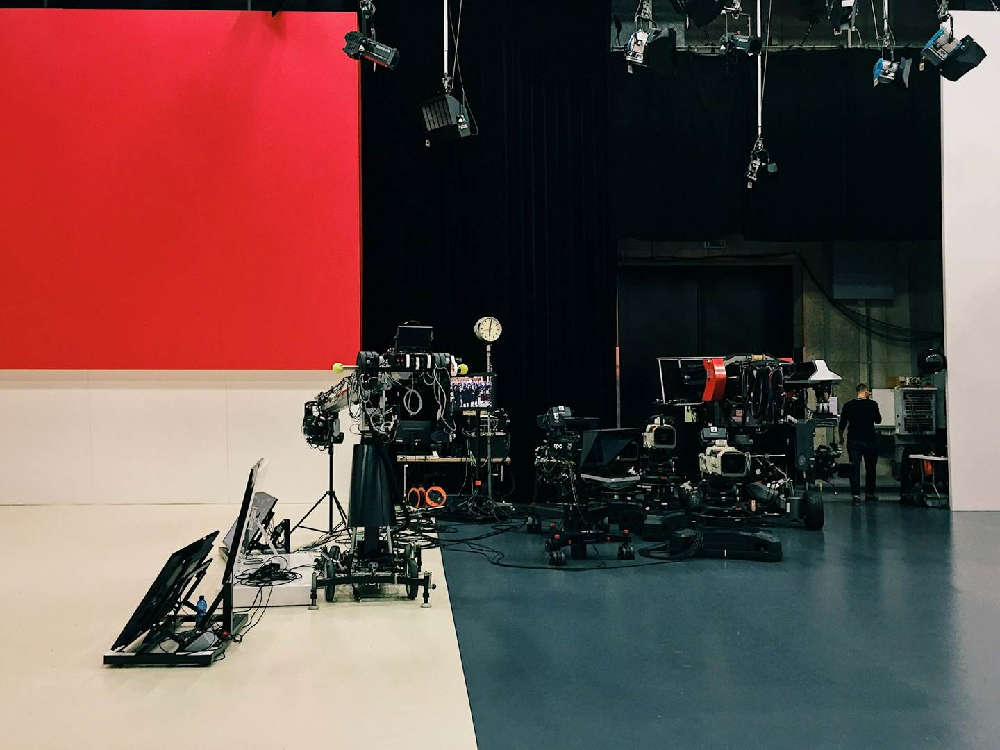

The Film &
Content
School Africa
A hands-on film and content school. Learn to write, shoot, light, cut and finish real work — then screen it in front of an audience.
Supported by
The reel
There’s never been a better time to be a visual storyteller, and our team brings decades of industry expertise to show you exactly how to bring your vision to life
The three tracks
Everyone starts together for three weeks. Then you choose.
Film Production Track
- Days
- Mondays & Saturdays
- Learning
- 9 weeks of learning
- Production
- 4 weeks of production
Who it’s for
For people who want to tell a story with a camera and a crew.
What you learn
You’ll learn composition and the master scene technique, coverage, the 180-degree rule, matching action. How to break down a script, build a budget, scout a location, and handle permits and IP rights in Nigeria.
How to work with collaborators, navigate rewrites, and direct actors. How to run auditions, camera tests and a call sheet that people can actually follow.
What you leave with
A short film you wrote, produced and directed, premiered to an audience.
The Content Creation Track
- Days
- Tuesdays & Thursdays
- Learning
- 10 weeks of learning
- Creating
- 7 weeks of creating
Who it’s for
For people making work for a phone screen who want it to actually land.
What you learn
Mobile-first, start to finish. What you shoot and how you shoot it. Why B-roll matters more than you think.
The Hook Strategy and the retention mechanics behind it. Sound design for content. Lighting people, lighting products, filming outdoors. Then niche, SEO and monetization.
What you leave with
A published body of work and a strategy that isn’t guesswork.
The Finisher’s Track
- Days
- Wednesdays & Fridays
- Learning
- 9 weeks of learning
- Creating
- 3 weeks of creating
Who it’s for
For people who’d rather be in the edit than on set.
What you learn
Post-production from the ground up: stages, file organization, assembly. The Rule of Six. Intention and rhythm. Multicam and delivery. Colour grading. Sound editing. Titles, motion graphics and basic VFX. Finishing, mastering and delivery.
What you leave with
An editor’s reel, a scene, a music video, an interview, Instagram content, plus the finished film the whole school made.
Work from the people teaching you
The 12 weeks
Three tracks, one timeline. Everyone starts together and everyone finishes together.
The programme runs as three parallel tracks over twelve weeks. Weeks 1 to 3, week 9 and week 12 are attended by all three tracks together. The following list gives every block in order.
Weekday classes run in the evening, after working hours, so you can keep your job. Saturday classes run in the morning or the afternoon, depending on the week.
Confirmed opening dates
Friday 25 September · Saturday 26 September · then Fridays and Saturdays through 10 October.
Take your seat
One fee covers all three tracks, three months on the CoLAB Campus, the mentors, the gear you learn on and the film you leave with. No add-ons, no per-track upsells.
NGN200,000
Three tracks · 12 weeks · one premiere
Claim your seatRegistration closes Saturday 10 October 2026. Seats are capped so every student gets set time.
What the fee unlocks
- All three tracks — Film, Content and the Finisher's
- Full access to CoLAB Campus for the whole three months
- Direct access to the film-school mentors
- Every class, on set and in the edit suite
- Access to camera, lighting and sound gear during classes
- A finished film, premiered to a live audience
- A seat in a working community of builders
- A certificate when you finish
Questions
Do I need to already know how to shoot?
No. The first three weeks assume nothing — story, camera, audio, lighting and screenplay from the ground up. Everyone does them together before choosing a track.
Do I need my own camera?
Not for the intro weeks — most of that work is shot on phones. In class you work on the school’s camera, lighting and sound gear, so you learn the kit hands-on before you ever have to own it.
Production week is different. You source what your film needs yourself, borrowed or rented — and budgeting for exactly that is part of the Film Track, so the cost lands in your production plan instead of arriving as a surprise.
What does it cost?
Tuition is ₦200,000 for the twelve weeks. You can pay it in full, or pay 70% — ₦140,000 — to hold your place and the remaining ₦60,000 on resumption, within the first four weeks.
Both come to the same ₦200,000; there is no surcharge for splitting it. Pay on this page.
What do I need to bring?
- A laptop — 8GB RAM recommended, at least 2GB VRAM
- A jotter and pen
- A smartphone, iPhone or Android
- A digital camera, if you have one
- A wireless microphone
- A cheap audio recorder — not compulsory
Does my track need anything extra?
The Finisher's Track
- A working computer and a durable hard drive of at least 1TB, required from week four
- Bring your laptop to every class — this track is mostly practical
Content Creation Track
- A phone and editing software
Can I switch tracks?
Track registration closes on Saturday 10 October, at the end of week three. Choose before then. After that the schedules diverge and switching means missing sessions.
How much time does this take each week?
Two classes a week, roughly six hours total, across weeks 1—3 and 6—12. In weeks 4 and 5 some tracks attend up to four days, because every student sits in on the post-production foundation.
Weekday classes run in the evening, after working hours, so you can keep your job. Saturday classes run in the morning or the afternoon, depending on the week.
What happens in production week?
The whole school moves onto set for a week. Film Track students rotate through crew roles, Finisher's students handle data and dailies, and Content students shoot behind-the-scenes. Everyone works on the film that premieres.
What do I actually walk away with?
Finished work, screened publicly on premiere night — a short film, an editor's reel, or a published content slate, depending on your track.
Pay your tuition
Card, bank transfer or USSD. Pay it all at once, or split it in two.
- Bank
- —
- Account name
- —
- Account number
- —
- Transfer — to the account above.
- Fill in the short form below and attach your receipt or a screenshot.
- We confirm by WhatsApp, usually the same day.
—
Twelve weeks.
Then your work on a screen.
Classes begin Friday 25 September 2026 in Kaduna. Tracks are chosen at the end of week three, and registration closes Saturday 10 October.

See you in class.